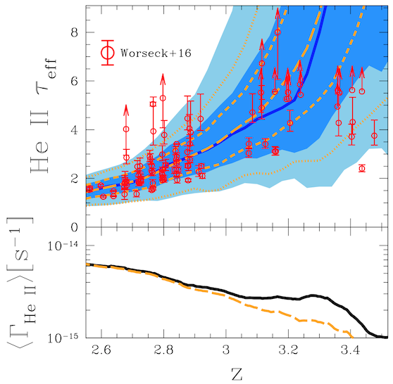
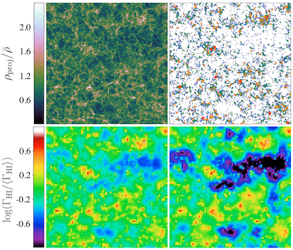
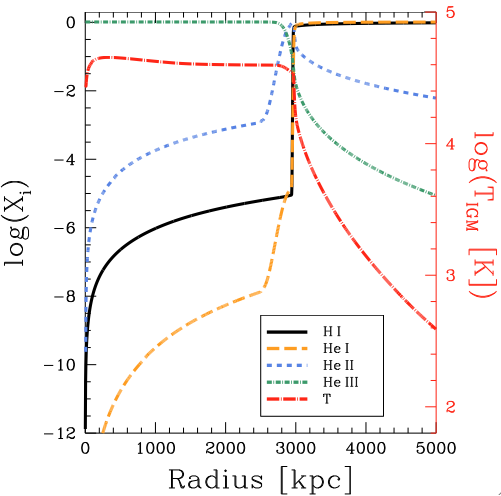
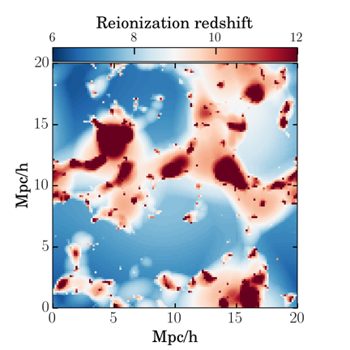
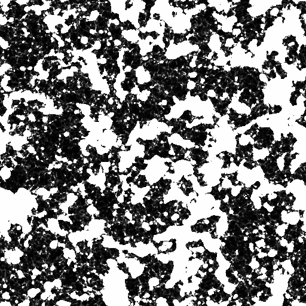
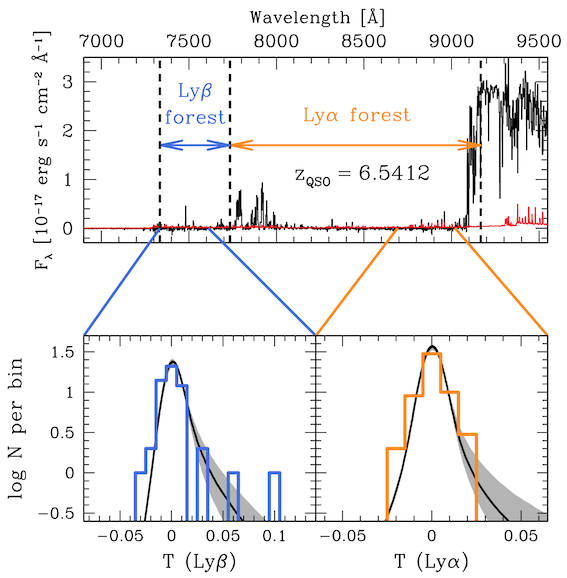
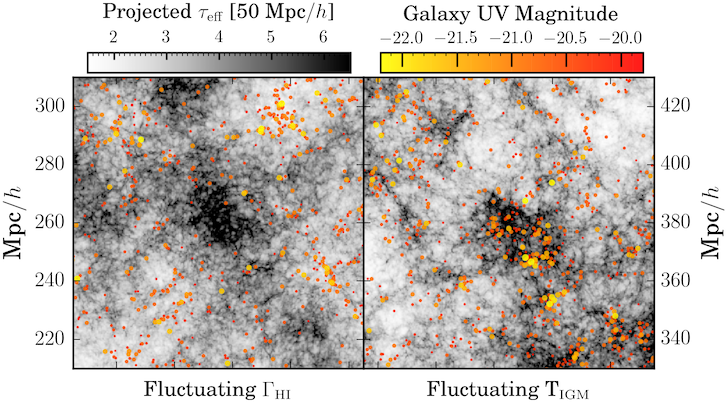
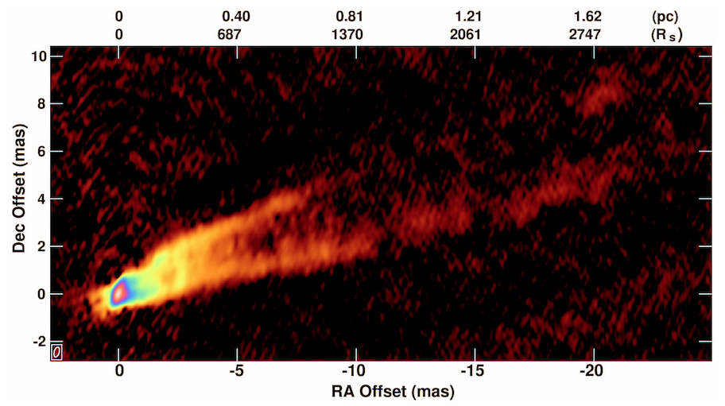

Theory Projects
Fluctuations in the Ionizing Background
The ionizing background, also known as the ultraviolet background (UVB), is the average intensity of ionizing radiation that any point in the universe receives due to distant sources, namely young stars in star-forming galaxies and accretion disks around supermassive black holes (quasars). The ionizing radiation from these sources is attenuated by cosmic expansion and residual neutral gas in the intergalactic medium, typically H I and He II, so the ionizing background is a composite picture of galaxy formation, quasar activity, and large-scale structure formation. While the current broad view of a mostly-uniform ionizing background has withstood observational tests for two decades, I am studing the effect of realistic non-uniformities in the ionizing background.
Helium-Ionizing Background
|  |
| Helium fluctuations; Davies, Furlanetto, & Dixon (2016) |
The helium-ionizing (> 54.4 eV) background in the epoch following He II reionization (z ~ 2–3) is highly fluctuating due to the relative rarity of the dominant radiation sources (bright quasars) compared to the mean free path of the photons.
I have developed a simple 3D numerical model for the evolution of the helium-ionizing background across cosmic time, including light travel time and spatially variable opacity to He II photons (i.e. a spatially variable mean free path). The model naturally reproduces the observed increase in the median optical depth and scatter between sightlines of the He II Lyα forest from 2.5 < z < 3.5, although there are several tunable parameters (mostly related to quasar properties). I am currently working with Gabor Worseck to apply lightcone outputs from these models to high-resolution hydrodynamical simulations and quantify their agreement (or not!) with HST/COS observations.
Collaborators: Steve Furlanetto (UCLA), Keri Dixon (Sussex), Gabor Worseck (MPIA)
Hydrogen-ionizing background
|  |
| Semi-numerical UVB modeling; Davies & Furlanetto (2016) |
While the fluctuations in the helium-ionizing background are due to the rarity of bright quasars, the clustering of star-forming galaxies that produce most of the hydrogen ionizing photons (> 13.6 eV) at z > 4 can result in similar fluctuations relative to the mean background. I am investigating the implications of these fluctuations on the ionizing background at very large scales, and how the background is self-regulated by H I absorption in the IGM/CGM.
During my thesis, I developed a model for self-consistent fluctuations in the ionizing background and mean free path of ionizing photons in large semi-numerical simulations, using the DexM code (Mesinger & Furlanetto 2007) to efficiently construct approximate density and halo fields from cosmological initial conditions. My simulations can approximately reproduce the extreme fluctuations in the z > 5.5 Lyα forest opacity (Davies & Furlanetto 2016 — arXiv link), but they require a shorter mean free path of ionizing photons than currently measured (although those measurements may be highly biased, see D'Aloisio et al. 2016).
Collaborators: Steve Furlanetto (UCLA), Anson D'Aloisio (UW)
Modeling the Epoch of Reionization
Radiative transfer modeling of ionization fronts
|  |
| Ionization structure; Davies, Furlanetto, & McQuinn (2016) |
The relativistically expanding ionized bubbles around quasars can have interesting effects on the IGM during hydrogen and helium reionization due to their detailed ionization and heating structure. These effects include 21 cm absorption/emission features, X-ray heating of the surrounding IGM, the shape of the IGM damping wing, and Lyman-series absorption and emission.
I have developed a one-dimensional radiative transfer scheme to investigate these effects at high resolution in the inhomogeneous IGM. The first application of this model was an investigation of Lyα emission from quasar ionization fronts during reionization (Davies, Furlanetto, & McQuinn (2016) — arXiv link), and now I am working on applying it to the proximity zones of z > 6 quasars to compare with new measurements by MPIA PhD student Anna-Christina Eilers (Eilers, Davies, et al., in prep.).
Collaborators: Steve Furlanetto (UCLA), Matt McQuinn (UW), Joseph Hennawi (UCSB),
Anna-Christina Eilers (MPIA)
Inhomogeneous reionization heating in cosmological simulations
|  |
| Inhomogeneous reionization history in a small box |
The heating of baryons in cosmological simulations during the epoch of reionization has historically been modeled by simply switching on a uniform background at some high redshift (typically z > 10) which near-instantly reionizes the entire volume (uniformly) with relatively little heat input. In reality, ionization fronts should leave behind temperatures of ~20,000 K, and the reionization process itself is likely inhomogeneous and extended. Semi-numerical reionization codes such as 21cmFAST (Mesinger et al. 2011) allow for rapid computation of the spatially-inhomogeneous reionization history given a set of cosmological initial conditions and certain assumptions about ionizing sources.
I am working with Jose Onorbe to implement such models in high-resolution simulations with the Nyx code (Almgren et al. 2013) to determine the effect of inhomogeneous reionization heating on precision measurements of the Lyα forest at z < 6.
Collaborators: Jose Onorbe (MPIA), Zarija Lukic (LBL)
Improving the mean free path in semi-numerical reionization
|  |
| Modified-21cmFAST ionization map |
Semi-numerical reionization simulations use the excursion-set formalism to rapidly compute reionization topology without the need for expensive radiative transfer or hydrodynamical simulations. Under a simple set of assumptions, the current state-of-the-art models (DexM, Mesinger & Furlanetto 2007; 21cmFAST, Mesinger et al. 2011) have only a handful of free parameters: the minimum halo mass for star formation, the efficiency of ionizing photon production, and the maximum distance that ionizing photons can travel. This last parameter is meant to represent the mean free path of ionizing photons, but only in a crude way.
I am developing a modified version of the 21cmFAST code that implements an improved prescription for the mean free path which leads to attenuation of photons on all scales.
Collaborators: Steve Furlanetto (UCLA)
Data/Observation Projects
Measuring the high-redshift ionizing background
from the Lyα and Lyβ flux PDF
|  |
| Illustration of Lyα+Lyβ PDFs; Davies et al., in prep. |
The state-of-the-art in ionizing background measurements is to measure the mean transmission of the Lyα forest and tune the (uniform) ionizing background in hydrodynamical simulations to match it. At the highest redshifts we can study with currently known quasars, the Lyα forest becomes highly opaque, either showing no transmission at all or a handful of narrow flux spikes.
I have developed a method to extract precision constraints on the strength of the ionizing background from the distribution of these spikes using Approximate Bayesian Computation (ABC; Pritchard et al. 1999), which allows for so-called "likelihood-free" parameter inference from sparse data. The posterior PDFs of model parameters are generated through rejection sampling an enormous number of mock data sets, fully accounting for non-linearity and covariances.
Collaborators: Joseph Hennawi (UCSB), Anna-Christina Eilers (MPIA), Zarija Lukic (LBL)
Searching for galaxies in a giant Gunn-Peterson trough
|  |
| Gunn-Peterson troughs and galaxies; Davies, Becker, & Furlanetto, in prep. |
A 110 Mpc/h Gunn-Peterson trough was observed towards the quasar ULAS J0148+0600 by Becker et al. (2015), who found that its existence is highly inconsistent with density fluctuations alone. There are only two other physical properties that could lead to such a trough: more-neutral gas due to a large-scale fluctuation in the ionizing background (Davies & Furlanetto 2016), or colder gas that has cooled since the heating from reionization (D'Aloisio et al. 2015). These two models make opposite predictions for the physical nature of the trough; it is either a giant void, or a giant overdensity. In principle, this can be tested by looking for galaxies that are co-spatial with the Gunn-Peterson trough.
Using my simulations of ionizing background and IGM temperature fluctuations, I have made predictions for the number of galaxies in the ULAS J0148+0600 Gunn-Peterson trough, and we received time on Subaru/HSC to observe the field in 2016B (PI: Furlanetto). Unfortunately, two hurricanes came perilously close to Hawai'i during our observing run, precluding acquisition of useful quantities of data. We will continue to request time for this survey, as it could provide an extraordinary breakthrough into the physical state of the post-reioniation IGM.
Collaborators: George Becker (UCR), Steve Furlanetto (UCLA)
43 GHz VLBA observations of the M87 jet
|  |
| 43 GHz M87 VLBA image; Walker et al. (2016) |
The radio jet of M87 shows complicated structure when observed with millimeter VLBI, providing great insight into the physics of the jet launching and collimation regions close to the several billion solar-mass black hole.
Originally started as an NSF REU project in 2008, I am working on measuring astrometry of the point-source core at the base of the M87 jet to look for possible core wandering or proper motion effects across 30+ epochs of 43 GHz VLBA observations over the last 15+ years (PI: R. C. Walker). Our current analysis suggests that we can constrain motions with a precision of ~1 microarcsecond per year, but systematic uncertainties are still a concern.
Collaborators: R. Craig Walker (NRAO), Joan Wrobel (NRAO), Bill Junor, Phil Hardee (Alabama), Chun Ly (Arizona)